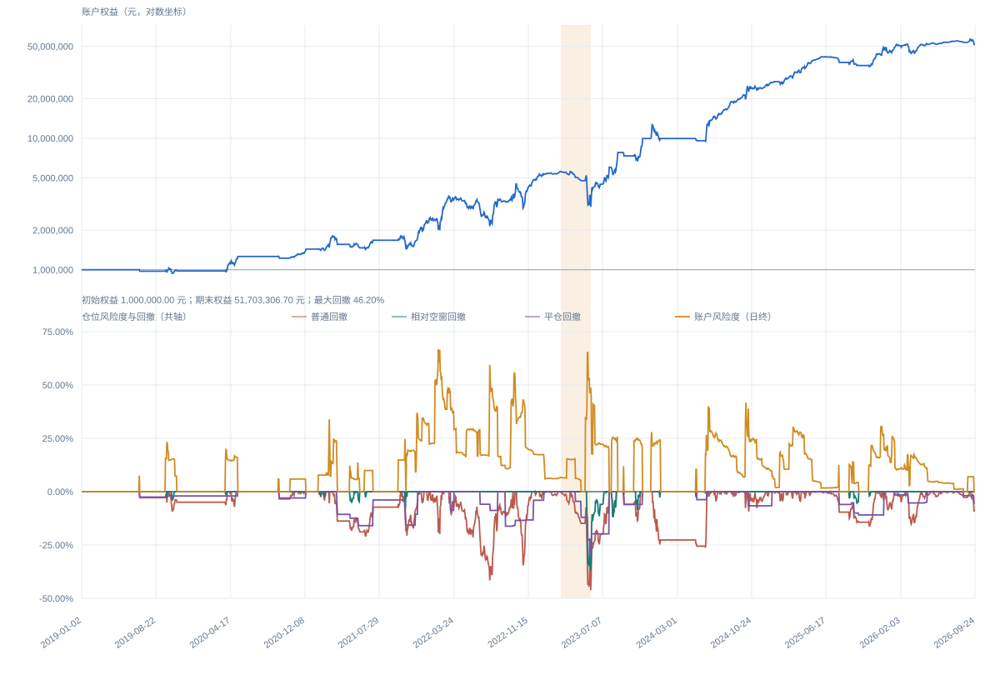

STRAT-032 · v0.7.6 · AUDITED RESEARCH BACKTEST
商品期货估值
与连续换月策略
将估值偏离、动态保证金、交割月成交量门槛与同手数换月纳入同一事件状态机。信号筛选与持仓管理按顺序执行，换月后的策略状态和真实会计成本分别记账。
同一正式运行的普通最大回撤为46.20%、最大日终总毛保证金风险度为66.73%；胜率47.27%，平均盈亏比4.66。
01 · RESULTS
完整区间的收益与风险路径
主图为对数权益；附图使用同一百分比轴展示账户风险度、普通回撤、相对空窗回撤和平仓回撤。平仓回撤描述已实现权益，普通回撤反映日终盯市波动。

年度账户权益变化 逐日盯市口径；2026年截至9月24日
年度账户数据加载中。
02 · SYSTEM
从筛选、提保到连续换月
0.7.6在前序策略上固定排除九个品种代码，普通开仓不依赖资讯；持仓仍由已生效的止损、提保减仓和交割前强退规则管理。
数据快照
活动合约行情、交割锚、方向保证金率、合约周期与公告可得时点。
机会筛选
估值偏离、交割月盘面成交量、固定代码排畸与候选合约排序。
账户风控
品种束冲突、单边与总毛风险预算，以及公告触发的提保减仓。
生命周期换月
到期前退出后，以已知价差设换月限价；同手数且重新核对资金与风险。
双轨记账
延续原策略时钟和保护阈值，同时按真实换月成交价记录新腿会计成本。
FROZEN SOURCE EXCERPT
公开真实增量模块
展示0.7.6冻结源码中的固定代码筛选和状态机接入。它依赖未公开的前序引擎与数据适配器，属于可审阅源码节选。
在网页中阅读两个Python文件 →FIXED_EXCLUDED_PRODUCTS = frozenset({
"LC", "PD", "PS", "PT", "SI",
"MA", "SH", "UR", "AG"
})
def product_excluded(product, exchange_code=None):
return product in FIXED_EXCLUDED_PRODUCTS03 · AUDIT
正式结果经过独立重放
源快照冻结后，短窗、完整历史、逐腿成交和逐日账户会计分别校验；报告与曲线来自同一正式运行。
编译及定向测试通过，无失败。
覆盖换月、减仓、成交、权益和风险。
与冻结成交和持仓账本一致。
55个完整周期、10次实际换月。
规范身份STRAT-032 · v0.7.6
正式运行STRAT032-FULL-MAIN-20260926
独立复算865,801条断言通过，错误0
交付审计v6同源报告及16项必需产物通过
04 · BOUNDARIES
研究假设影响收益解释
这些限制与绩效一起阅读，尤其是交割锚的当时可得性。0.7.6是一份按冻结假设复算的历史模拟。
未来锚标记
55个周期中29个带有未来锚标记；部分历史交割月价的当时可知性未逐月独立证明。
数据质量
源快照质量标记为PARTIAL；缺失与推定政策在正式运行中留痕。
成本假设
手续费、滑点均为零，未验证真实成交冲击和市场容量。
日频撮合
日线高低价无法还原跨合约盘中先后，限价触达不等于真实成交。
资金近似
同一开盘批次按统一权益快照预算，不把未成交预算与日内释放资金反复分配。
用途边界
结果不构成实盘业绩、收益承诺或投资建议。